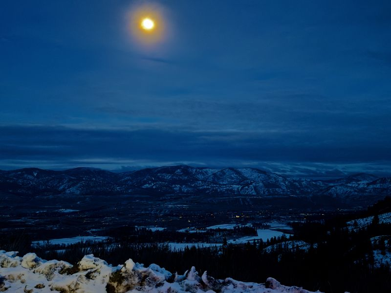
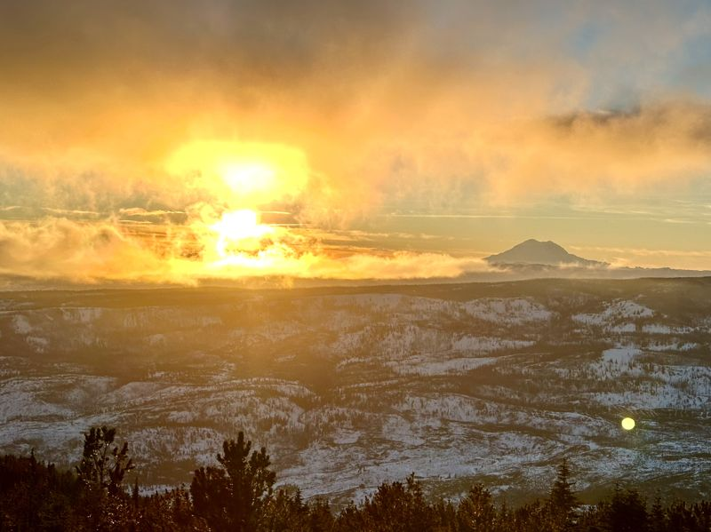

Gallery
Hikes
Washington has a trail for every mood — a steep scramble to a forest overlook, or an easy walk to watch the moon come up over the Methow Valley. These are a few of the views worth the legwork. Tap any photo to enlarge it.

Dirty Harry's Peak
Snoqualmie, Washington

Moonrise over Patterson Lake
Winthrop, Washington

Sunset over the Methow Valley
Winthrop, Washington